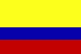
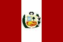

|
Länderinformationen Südamerika
1. Das Wichtigste auf einen Blick2. Sehens- und Hörenswertes
3. Politik & Gesellschaft
4. Schmeckenswertes
5. Medien
6. Reisetipps
3. Politik & Gesellschaft
In
diesem Teil möchten wir Ihnen das politische und
gesellschaftliche Leben in Südamerika kurz vorstellen |
Wir präsentieren Ihnen hier die wichtigsten Eckdaten zu Politik und Gesellschaft der Länder. Für tiefer gehende Informationen werfen Sie wieder einen Blick auf die Seite des Auswärtigen Amtes der Bundesrepublik Deutschland unter www.auswaertiges-amt.de/diplo/de/Laenderinformationen/LaenderReiseinformationenA-Z.jsp.
 Politik
Politik
Zunächst präsentieren wir Ihnen hier einen kleinen, stichpunktartigen Überblick über die politischen Landschaften und Systeme Südamerikas. Wir haben auch immer vermerkt, wann die Kolonie vom Mutterland Spanien ihre Unabhängigkeit erlangte.
 Argentinische
Republik (República Argentina):
Argentinische
Republik (República Argentina):
- Unabhängigkeit:1816
- Staatsform: Bundesrepublik seit 1853
- Parlament: Abgeordnetenhaus (257 gewählte Mitglieder, direkte Wahl der Hälfte alle zwei Jahre für vier Jahre) und Senat (72 gewählte Abgeordnete, direkte Wahl für sechs Jahre)
- Staatsoberhaupt: Präsident (Direktwahl für vier Jahre) ist gleichzeitig Regierungschef
- Website: www.argentina.gov.ar
 Republik
Bolivien (República de Bolivia):
Republik
Bolivien (República de Bolivia):
- Unabhängigkeit: 1825
- Staatsform: Präsidialdemokratie und Bundesrepublik seit 1967
- Parlament: Kongress bestehend aus Camara de Senadores (Senat, 72 Sitze) und Camara de Diputados (Abgeordnetenkammer, 257 Sitze), Wahl für jeweils fünf Jahre
- Staatsoberhaupt: Präsident (Direktwahl für fünf Jahre) ist gleichzeitig Regierungschef
- Website: www.bolivia.gov.bo
 Republik
Chile (República de Chile):
Republik
Chile (República de Chile):
- Unabhängigkeit: 1810
- Staatsform: Präsidialdemokratie und Republik seit 1925
- Parlament: Kongress, bestehend aus zwei Kammern: Senat (38 Sitze) und Abgeordnetenkammer (120 Sitze) – Senatoren werden für acht Jahre, Abgeordnete für vier Jahre gewählt
- Staatsoberhaupt: Präsident (Direktwahl alle sechs Jahre) und gleichzeitig Regierungschef
- Website: www.gobiernodechile.cl
Republik Ecuador (República del Ecuador):
- Unabhängigkeit: Proklamation der Unabhängigkeit am 10.08.1809
- Staatsform: Präsidialdemokratie seit 1978
- Parlament: Congreso Nacional (100 Mitglieder) Direktwahl alle vier Jahre; der Nationalkongress ist jedoch seit der Aufnahme der Arbeit der verfassungsgebenden Versammlung (VV) suspendiert
- Staatsoberhaupt: Präsident ist gleichzeitig Regierungschef (Direktwahl für vier Jahre)
- Website: www.presidencia.gov.ec
 Republik
Kolumbien (República de Colombia):
Republik
Kolumbien (República de Colombia):
- Unabhängigkeit: 1810
- Staatsform: Präsidialrepublik seit 1886
- Parlament: Zweikammerparlament (Congreso) bestehend aus Repräsentantenhaus (166 Mitglieder) und Senat (102 Mitglieder)
- Staatsoberhaupt: Präsident ist gleichzeitig Staatsoberhaupt und Regierungschef (Direktwahl für vier Jahre)
- Website: www.gobiernoenlinea.gov.co und http://web.presidencia.gov.co
Republik Paraguay (República del Paraguay):
- Unabhängigkeit: 1811
- Staatsform: Präsidialrepublik seit 1967
- Parlament: Zweikammerparlament: Abgeordnetenkammer mit 80 und Senat mit 45 Mitgliedern, Wahl auf fünf Jahre
- Staatsoberhaupt: Präsident ist gleichzeitig Regierungschef, Wahl auf fünf Jahre
- Website: www.presidencia.gov.py
 Republik
Peru (República del Perú):
Republik
Peru (República del Perú):
- Unabhängigkeit: 1821
- Staatsform: Präsidialrepublik seit 1980
- Parlament: Kongress, 120 Mitglieder
- Staatsoberhaupt: Präsident ist gleichzeitig Regierungschef (Wahl auf fünf Jahre)
- Website: www.peru.gob.pe
 Republik
Östlich des Uruguay (República Oriental del
Republik
Östlich des Uruguay (República Oriental del
Uruguay):
- Unabhängigkeit: 1825, international anerkannt 1828
- Staatsform: Präsidialrepublik seit 1967
- Parlament: Abgeordnetenhaus mit 99 Sitze (Wahl auf fünf Jahre) und Senat (30 Sitze)
- Staatsoberhaupt: Präsident ist gleichzeitig Regierungschef (Wahl auf fünf Jahre)
- Website: www.presidencia.gub.uy
 Bolivarische
Republik Venezuela
(República Bolivariana de
Bolivarische
Republik Venezuela
(República Bolivariana de
Venezuela):
- Unabhängigkeit: Unabhängigkeitserklärung 1811
- Staatsform: Präsidiale Bundesrepublik seit 1961
- Parlament: Nationalversammlung (165 Mitglieder), Wahl auf fünf Jahre
- Staatsoberhaupt: Präsident ist Regierungschef, Wahl alle sechs Jahre
- Website: www.presidencia.gob.ve
 Geschichte
Geschichte
Wenn Sie sich ein wenig über die Geschichte eines der Länder erkundigen wollen, haben wir hier für Sie eine nützliche Link-Liste erstellt, wo Sie die jeweiligen Informationen finden können.
Allgemein zur
Geschichte des südamerikanischen Kontinents werfen Sie einen
Blick auf die Seite
www.travelworldonline.de/geschichtesuedamerika.html.
Für Entwicklungen des 19. und 20. Jahrhunderts in Südamerika sind Sie auf www.lateinamerika-studien.at/content/geschichtepolitik/geschichte/geschichte-162.html an der richtigen Stelle.
|
Argentinien |
|
|
Bolivien |
|
|
Chile |
|
|
Ecuador |
|
|
 Kolumbien |
|
|
Paraguay |
|
|
 Peru |
|
|
Uruguay |
|
|
Venezuela |
 Religion
Religion
|
Argentinien |
Katholiken 90 Prozent, Protestanten zwei und Juden ein Prozent,
andere Glaubensrichtungen rund sechs Prozent. |
|
Bolivien |
Fast 95 Prozent sind römisch-katholisch, der Rest gehört
protestantischen Glaubensgruppierungen an. |
|
Chile |
70 Katholiken, 10 Prozent Protestanten, weitere
Glaubensrichtungen.
|
|
Ecuador |
Rund 80 Prozent Katholiken, außerdem Protestanten, Juden
und Anhänger von Naturreligionen. |
|
Kolumbien |
Über 90 Prozent Katholiken, außerdem amerikanische
evangelikale Sekten und jüdische Minderheiten. |
|
Paraguay |
Über 90 Prozent Katholiken, protestantische
Minderheiten, Mennoniten und Bahai. |
|
Peru |
Rund 90 Prozent Katholiken, protestantische Minderheiten sowie
Naturreligionen. |
|
Uruguay |
Fast 75 Prozent Katholiken, zwei Prozent Juden, insgesamt stark
laizistische Prägung. |
|
Venezuela |
96 Prozent Katholiken, zwei Prozent protestantische, außerdem
orthodoxe und jüdische Minderheiten. |
 Feiertage
Feiertage
Feiertage erzählen immer auch etwas über Geschichte und Traditionen eines Landes. Außerdem ist es ja auch ganz nützlich zu wissen, wann die Geschäfte geschlossen haben, wenn man umher reist.
Um die Feiertage Ihres südamerikanischen Urlaubslandes herauszufinden, werfen Sie einen Blick auf die Seite www.feiertage-weltweit.com/index.htm.
Den Nationalfeiertag, der für viele Länder einen besonders wichtigen Tag darstellt, haben wir hier für die spanischsprachigen Ländern für Sie aufgeführt.
|
Land |
Nationalfeiertag am |
|
|
25. Mai |
|
Bolivien |
6. August |
|
Chile |
18./19. September
|
|
|
10. August
|
|
Kolumbien |
20. Juli |
|
|
15.05.09 |
|
Peru |
28. und 29. Juli |
|
|
25. August |
|
|
5. Juli
|
Im nun folgenden Kapitel wollen wir Sie
einladen zu einer kleinen kulinarischen Reise durch die vielfältige
und köstliche Küche Südamerikas und Ihnen so einen
kleinen Vorgeschmack auf Ihre kommenden Urlaubsgenüsse geben.